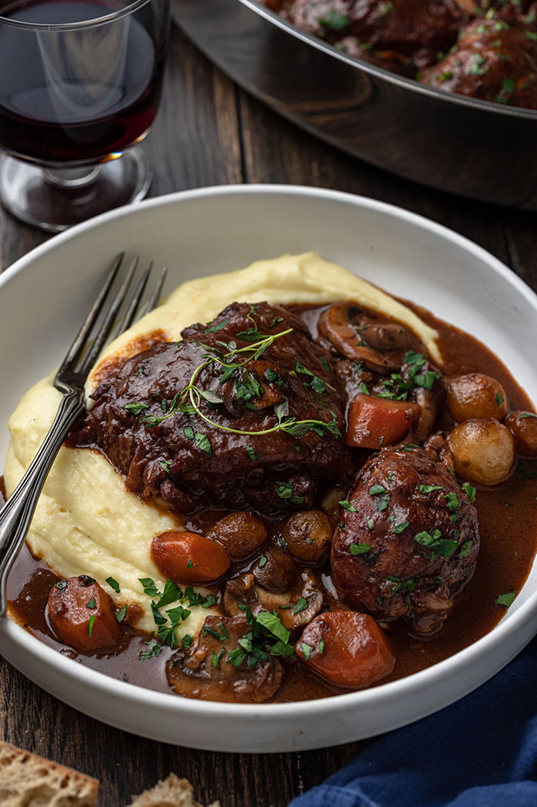

Coq Au Vin Recipe

Ingredients
- Chicken(Dark meat preferred)
- 750ml Red Wine
- 3 Carrots, Diced
- 3 Cloves garlic
- 1L beef broth
- Lots of bacon
- Mushrooms
- Pearl Onions
Directions
- Cook the bacon in your dutch oven until golden
- Remove bacon and cook chicken in bacon fat until golden
- Set chicken aside and deglaze the pot with the wine
- After half of the wine has evaporated, pour the beef broth, add the carrots, garlic and let simmer for 45 mins
- In the meantime,cook the mushrooms until browned.
- Finish off the chicken in the oven for about 10 mins at 400 degrees and add to the wine/broth mixture
- About 5 mins before plating, sautee the pearl onions in butter and add to the mixture
- Voila, You are done!